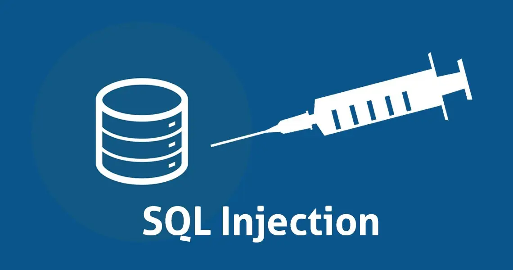
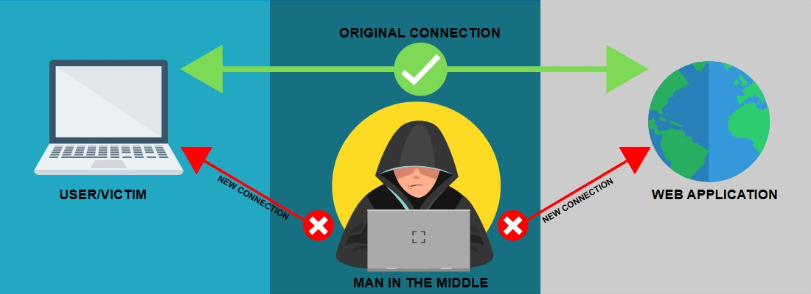
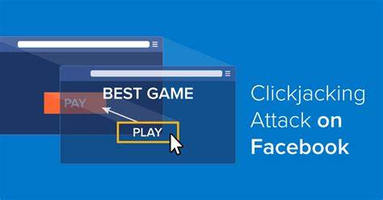
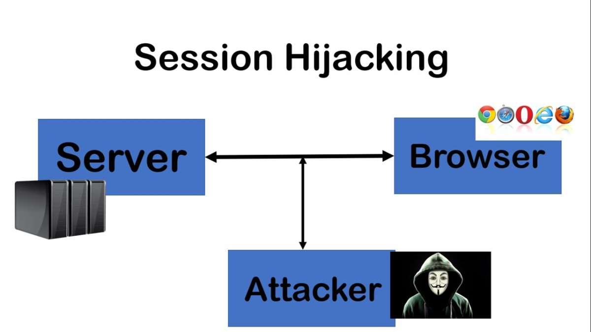
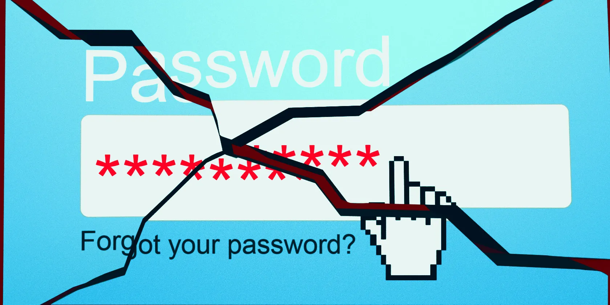
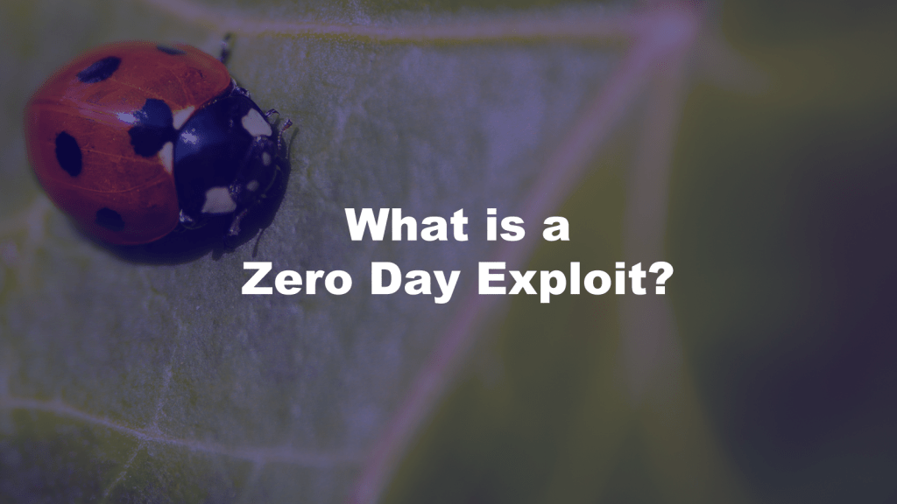

SQL Injection

source: https://securitytutorials.co.uk/sql-injection-basics/
|
SQL Injection is a code injection technique used to attack data driven applications, in which nefarious SQL statements are inserted into an entry field for execution.
https://securitytutorials.co.uk/sql-injection-basics/
|
Cross-site Scripting (XSS)
 source: https://www.geeksforgeeks.org/what-is-cross-site-scripting-xss/
source: https://www.geeksforgeeks.org/what-is-cross-site-scripting-xss/
|
Cross Site Scripting (XSS) is a vulnerability in a web application that allows a third party to execute a script in the user’s browser on behalf of the web application.
https://www.geeksforgeeks.org/what-is-cross-site-scripting-xss/
|
Cross-site Request Forgery (CSRF)
 source: https://www.geeksforgeeks.org/what-is-cross-site-scripting-xss/
source: https://www.geeksforgeeks.org/what-is-cross-site-scripting-xss/
|
The CSRF attack works by exploiting existing authenticated user sessions.
https://kindsonthegenius.com/blog/learn-about-cross-site-request-forgery-csrf-attack/
|
Phishing
source: https://marketbusinessnews.com/financial-glossary/phishing-definition/
|
Somebody who sends emails pretending to be from a genuine or reputable company and asks the reader to disclose personal information is phishing.
https://marketbusinessnews.com/financial-glossary/phishing-definition/
|
Denial of Service (DoS)
 source: https://www.researchgate.net/figure/Denial-of-Service-DoS-attack-A-DDoS-Distributed-Denial-of-Service-attack-as-shown-in_fig2_325779181
source: https://www.researchgate.net/figure/Denial-of-Service-DoS-attack-A-DDoS-Distributed-Denial-of-Service-attack-as-shown-in_fig2_325779181
|
A Denial of Service (DoS) attack takes control of several victim systems (known as slaves, through the spread of malware) in order to take down a service by ordering the slaves in the botnet to send fake traffic which fabricates data making resources unavailable to legitimate users.
https://www.researchgate.net/figure/Denial-of-Service-DoS-attack-A-DDoS-Distributed-Denial-of-Service-attack-as-shown-in_fig2_325779181
|
Man-in-the-Middle (MitM)

source: https://aboutssl.org/man-in-the-middle-attacks-prevention/
|
A MITM (Man-in-the-Middle) attack is the type of online attack where a hacker gets in between a user and the website they’re visiting.
https://aboutssl.org/man-in-the-middle-attacks-prevention/
|
Clickjacking

source: https://geekflare.com/clickjacking-attacks-social-network/
|
Clickjacking is an attack method, also known as User Interface Redressing, because it is set up by disguising (or redressing) a link with an overlay that tricks the user into doing something different than he or she thinks.
https://geekflare.com/clickjacking-attacks-social-network/
|
Session Hijacking

source: http://allabouttesting.org/session-hijacking-explained/
|
Session hijacking is exploiting a valid session id (also called a session key) to gain unauthorized access to the website on a computer.
http://allabouttesting.org/session-hijacking-explained/
|
Brute Force Attack

source: https://www.makeuseof.com/tag/brute-force-attack/
|
Brute-forcing refers to guessing every possible password combination until you eventually figure it out.
https://www.makeuseof.com/tag/brute-force-attack/
|
Zero-Day Exploits

source: https://www.askcybersecurity.com/zero-day-exploit/
|
A Zero Day exploit is malicious software designed to work against a particular flaw in computer software, hardware, or IT system called a vulnerability or bug.
https://www.askcybersecurity.com/zero-day-exploit/
|